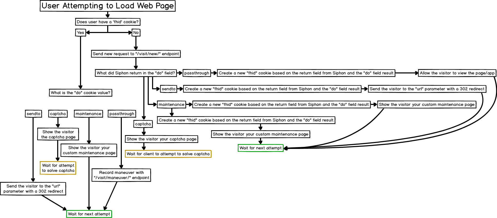

Introduction
Welcome to the Siphon API! You can use our API to access Siphon API endpoints, which can allow you to filter traffic.
Multiple integrations exist already for popular CMS (Content Management Systems) like WordPress and Joomla, we also have a full integration for PHP already that can be downloaded inside your dashboard.
Traffic Endpoints
These endpoints allow for the sending of website traffic and receiving real-time judgements based on filter settings. A simple flow chart has also been created to demonstrate the logic for using these endpoints in your application effectively.

{kind=link}
Visit
New Visit
Replace
123abcToken&123abcIdwith your own values
curl --request POST \
--url https://siphon-api.com/v3/visit/new/ \
--header 'cache-control: no-cache' \
--header 'content-type: application/json' \
--data '{ \
"apitoken": "123abcToken", \
"apiid": "123abcId", \
"remote_addr": "192.168.1.1", \
"remote_port": "16017", \
"server_protocl": "HTTP\/1.1", \
"connection": "keep-alive", \
"user_agent": "Mozilla\/5.0 (Windows NT 10.0; Win64; x64) AppleWebKit\/537.36 (KHTML, like Gecko) Chrome\/62.0.3202.89 Safari\/537.36", \
"upgrade_insecure_requests": "1", \
"http_accept": "text\/html,application\/xhtml+xml,application\/xml;q=0.9,image\/webp,image\/apng,*\/*;q=0.8", \
"accept_encoding": "gzip", \
"accept_language": "en-US,en;q=0.9", \
"cookies": "__cfduid=d130c6d17df1705100ccca3f68ac3a5b61506533527;", \
"request_method": "get", \
"request_time": "1510780023", \
"refer": "", \
"server_software": "nginx", \
"server_version": "1.6.2", \
"host": "example.com", \
"script_name": "\/something.html", \
"query_string": "var1=something", \
"http_cf_ray": "3be535j29bac91dc-EWR", \
"http_cf_visitor": "{\"scheme\":\"https\"}", \
"http_cf_connecting_ip": "192.168.1.2", \
"http_x_forwarded_proto": "https", \
"http_x_forwarded_for": "192.168.1.1", \
"request_full_response": "true" \
}'
The above command returns JSON structured like this:
{
"do": "url",
"sendto": "https://example.com/lander1.hml",
"fhid": 753159,
"type": "h",
"result": "t",
"geo": {
"country": "US",
"region": "pa",
"city": "philadelphia",
"postcode": "19102"
},
"potential_bot_score": "0.0",
"proxy_likelyhood": "0.0",
"os_name": "windows",
"browser_name": "chrome"
}
This endpoint allows processing of a new visitor to a website where no previous cookie is detected. All data should be sent JSON encoded.
HTTP Request
POST https://siphon-api.com/v3/visit/new/
Required Parameters
All of the information being sent to Siphon should not be processed by your system in any way as Siphon will perform its own parsing of fields, this means the data should be "raw".
| Parameter | Type | Description |
|---|---|---|
| apitoken | string | Authentication parameter that is unique per filter |
| apiid | int | Authentication parameter that is unique per filter |
| remote_addr | string | Either an IPv4 or IPv6 address of the visitor |
| remote_port | int | Port that the connection was made to the web server on |
| server_protocl | string | The hypertext transfer protocol version. Typically either "HTTP 1.1" or "HTTP 1.0" |
| connection | string | either "keep-alive" or "close" |
| user_agent | string | Raw user-agent string received from the client |
| upgrade_insecure_requests | int | Raw HTTP header sent by the client |
| http_accept | string | Raw HTTP header sent by the client |
| accept_encoding | string | Raw HTTP header sent by the client |
| accept_language | string | Raw HTTP header sent by the client |
| cookies | string or null | List of cookies the client is using separated by semicolons or a null value for no cookies |
| request_method | string | Type of request of the client made, typically is one of the following: "post", "put", or "get" |
| request_time | string | A unix timestamp of when the request was first received |
| refer | string | Refer of the visitor |
| server_software | string | One of the following must be sent: apache,nginx,iis,tomcat,lighttpd,other |
| server_version | string | The software version of server software that has received this request |
Separated URL parameters
| Parameter | Type | Description |
|---|---|---|
| host | string | Domain name of the server |
| script_name | string | URL path to the script being requested by the client |
| query_string | string | The query parameters of the request |
Single URL parameter
| Parameter | Type | Description |
|---|---|---|
| url | string | The complete url for the request. Siphon will then parse this itself |
Optional Parameters
Siphon fully supports the use of Cloudflare and as such accepts the custom headers that Cloudflare adds to requests
| Parameter | Type | Description |
|---|---|---|
| http_cf_ray | string | Raw header added by Cloudflare |
| http_cf_visitor | string | Raw header added by Cloudflare |
| http_cf_connecting_ip | string | Raw header added by Cloudflare |
| http_x_forwarded_proto | string | Raw header added by Cloudflare |
| http_x_forwarded_for | string | Raw header added by Cloudflare |
| Parameter | Type | Description |
|---|---|---|
| request_full_response | bool | Set to 'true' if you would like additional details on response |
Solve a captcha
curl --request POST \
--url https://siphon-api.com/v3/visit/solvecaptcha/ \
--header 'cache-control: no-cache' \
--header 'content-type: application/json' \
--data '{ \
"captcha_token ": "qLweVCIrk2GV", \
"captcha_choice": "60" \
}'
The above command returns JSON structured exactly like the visit/new/ endpoint returns
This endpoint allows clients to solve Siphon supplied captchas.
HTTP Request
POST https://siphon-api.com/v3/visit/captchasolve/
Required Parameters
| Parameter | Type | Description |
|---|---|---|
| captcha_token | string | The captcha token sent back by Siphon in the original new visit call |
| captcha_choice | string | The choice of the client in their attempt to solve the captcha |
Record a maneuver
curl --request POST \
--url https://siphon-api.com/v3/visit/maneuver/ \
--header 'cache-control: no-cache' \
--header 'content-type: application/json' \
--data '{ \
"apitoken": "123abcToken", \
"apiid": "123abcId", \
"fhid": "45044" \
"host": "example.com", \
"script_name": "/another_page.html", \
"query_string": "var5=something6" \
The above command returns JSON structured like this:
{
"result": "success"
}
This endpoint allows the recording of maneuvers on a site by a client after a visit
HTTP Request
POST https://siphon-api.com/v3/visit/maneuver/
Required Parameters
| Parameter | Type | Description |
|---|---|---|
| apitoken | string | Authentication parameter that is unique per filter |
| apiid | int | Authentication parameter that is unique per filter |
| fhid | int | Authentication parameter that is unique per filter |
Separated URL parameters
| Parameter | Type | Description |
|---|---|---|
| host | string | Domain name of the server |
| script_name | string | URL path to the script being requested by the client |
| query_string | string | The query parameters of the request |
Single URL parameter
| Parameter | Type | Description |
|---|---|---|
| url | string | The complete url for the request. Siphon will then parse this itself |
Errors
The Siphon API uses the following error codes:
| Error Code | Meaning | Description |
|---|---|---|
| 400 | Bad Request | Your request is malformed. |
| 401 | Unauthorized | Your API credentials are wrong. |
| 402 | Payment Required | Your account does not have an active subscription |
| 404 | Not Found | Your request is trying to access an unknown endpoint. |
| 405 | Method Not Allowed | You tried to access an end point with an invalid method. |
| 406 | Not Acceptable | You requested a format that is not json. |
| 500 | Internal Server Error | We had a problem with our server. Try again later. |
| 503 | Service Unavailable | We're temporarily offline for maintenance. Please try again later. |